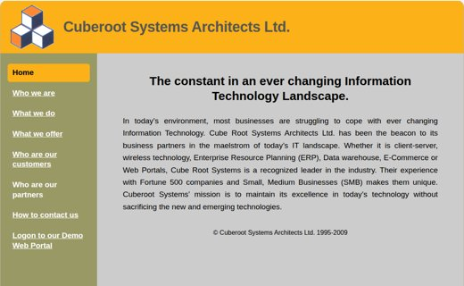

Then & Now
“The constant in an ever-changing information technology landscape.”
That was the promise on our home page. The landscape kept changing — and so did we.
1995Founded
Willy Rosales starts Cuberoot as an SAP R/3 implementer for Fortune 500 companies.
1996Mid-market pilots
Part of SAP’s R/3 pilots for medium-sized companies — the work behind the ASAP methodology.
2018Consulting ends
Twenty-three years of ERP, data warehouse, e-commerce and web-portal projects.
TodayRetired, still building
Personal apps designed with AI, used by family and friends. Native iOS and Android versions next.
What we did
- SAP Basis and technical infrastructure
- System and network sizing, provisioning, data centre operation
- ABAP development, authorizations, interfaces and data loads
- Business Warehouse and B2B technical consulting
- Blueprinting, go-live support and project management
What I do now
- Design small apps around real, everyday needs
- Build them with AI as a working partner
- Host them on GitHub Pages, with Firebase behind
- Document every app properly — old habits
- Apply the same fault-tolerance thinking, at a smaller scale

The original website, preserved
The old pages — three-cube logo, colours, sidebar and “Logon to our Demo Web Portal” — kept as they were.
Visit the archive →